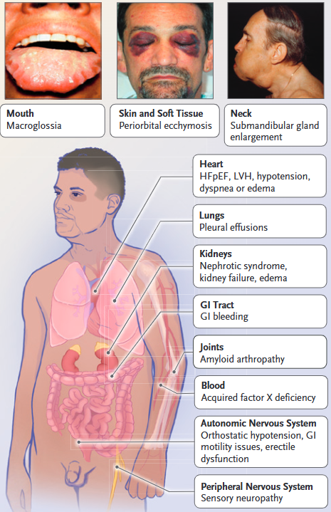
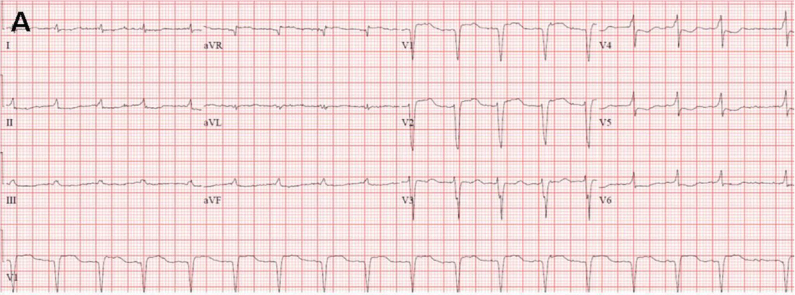
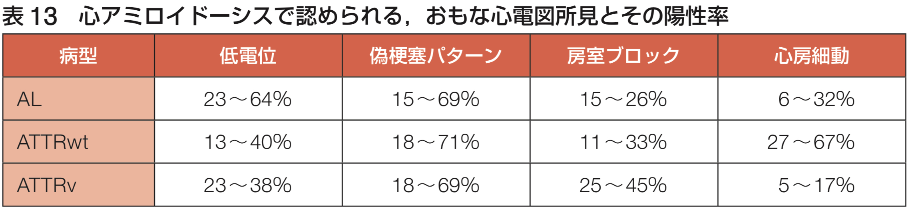
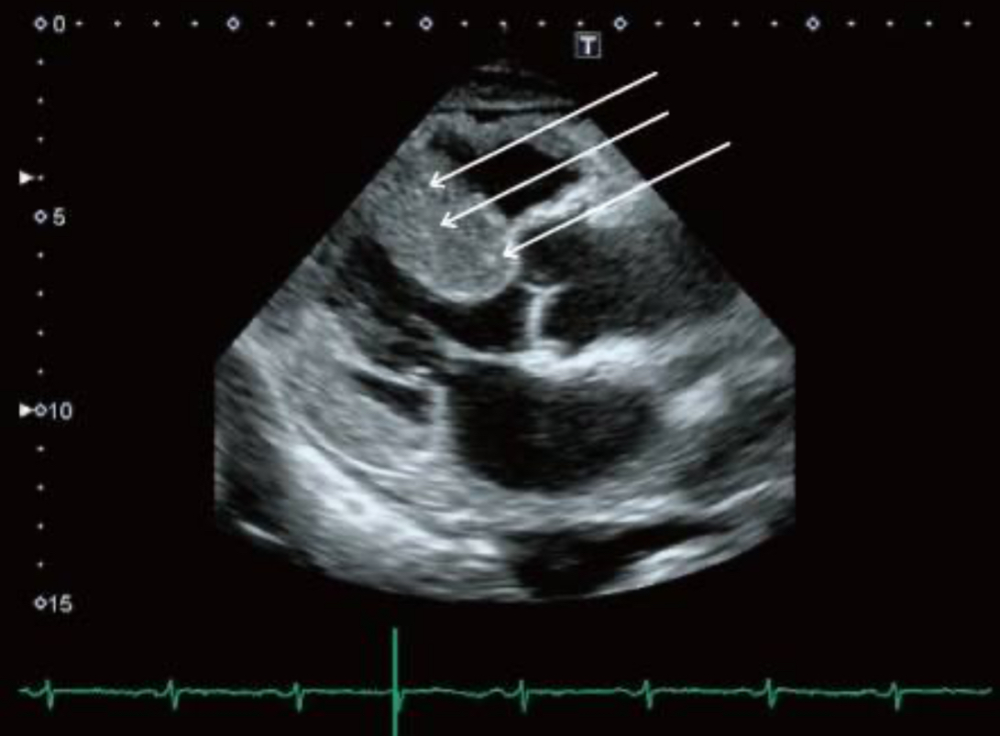
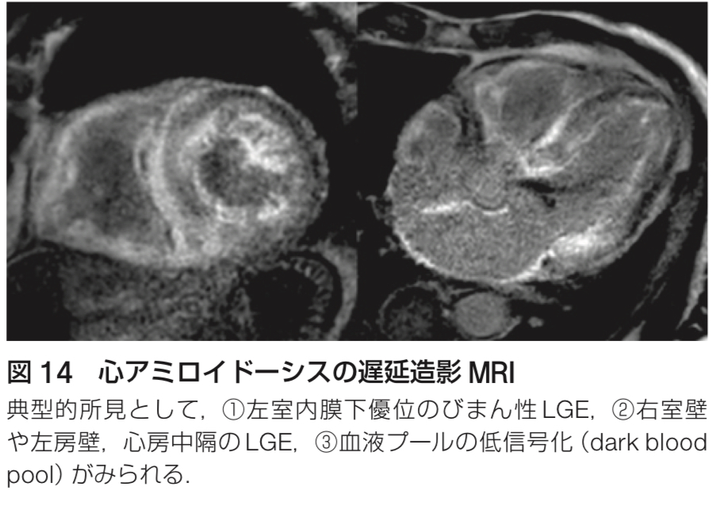
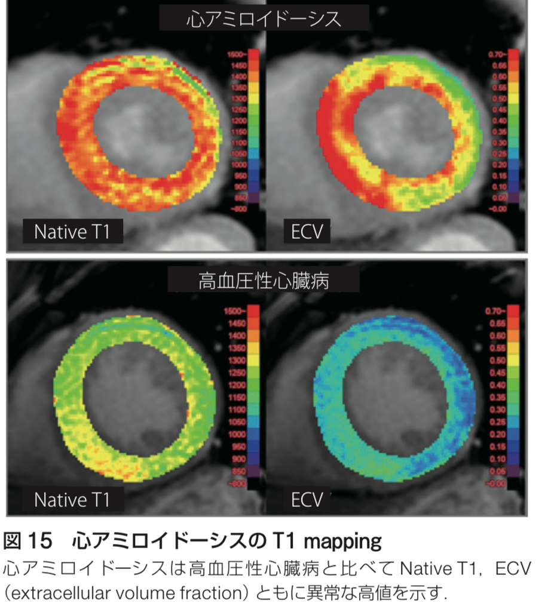
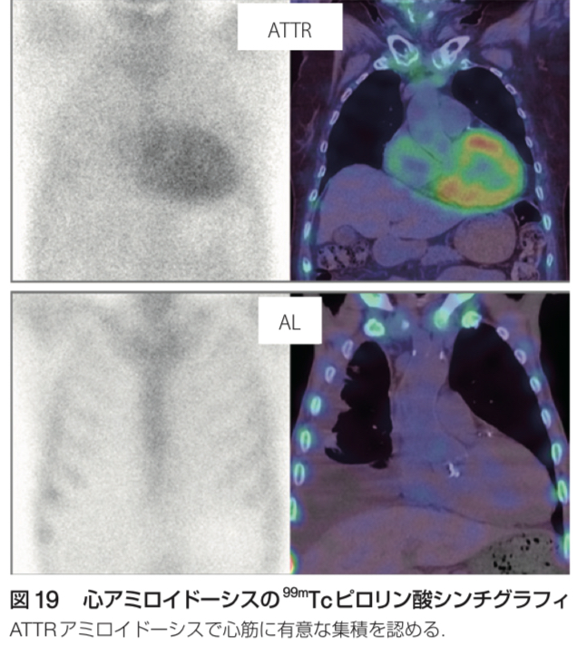
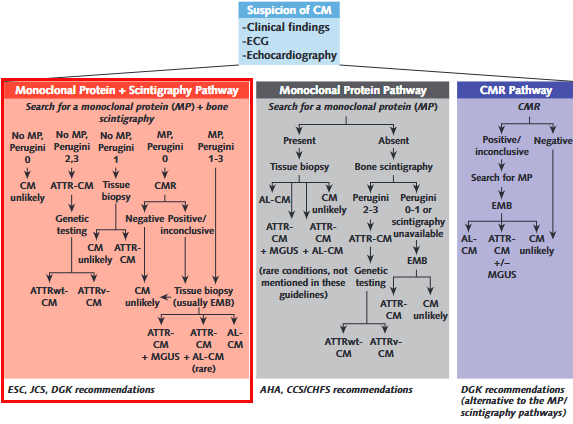

![]()
flowchart LR A["Amyloidosisを疑う"] --> B["Clueとなる追加情報を集める"] B --> C["AmyloidosisのTyping: 侵襲的検査"]
Systemic amyloidosisとは
2024-12-04
Amyloidとは？
- 1854年にVirchowが発見したミスフォールド前駆体
タンパク質に由来する線維状物質(Benson et al. 2020; DynaMed 2024) - 全身の臓器に沈着し、多くの臓器障害を起こす
- 有病率はだいたい100万人あたり14人と推定されている
- CMLとかと同じくらいの頻度
Amyloidosisの分類
- 遺伝性 vs. 後天性 / 全身性 vs. 局所
- 局所の代表例はCAAとか、Alzheimer型認知症とか
→ 今回は全身性のアミロイドーシスに焦点を当てる
- 局所の代表例はCAAとか、Alzheimer型認知症とか
- Amyloidの種類によっても分類可能
- AA, AL, ATTR etcetc
- Amyloidの種類での分類が最もわかりやすい
Amyloidの種類の重要性
- 全身性/局所性も遺伝性/後天性もAmyloidの種類で
ある程度わかる - 障害される臓器PatternもAmyloidの種類でわかる事が多い
- 何よりも、治療法の有無が決定される（後述）
Amyloidの種類と特徴
最重要スライド！！
| 種類 | 前駆物質 | 遺伝性/後天性 | 障害臓器 | 全身性/局所性 |
|---|---|---|---|---|
| AL | 免疫グロブリン軽鎖 | 両方 | 全臓器、中枢神経は稀 | 両方 |
| AA | 血清アミロイドA | 後天性 | 中枢神経以外全て、通常腎臓 | 全身性 |
| ATTR-wt | トランスサイレチン | 後天性 | 心臓、肺、腱 | 全身性 |
| ATTR-v | トランスサイレチン | 遺伝性 | 末梢/自律神経、心臓、目、髄膜 | 全身性 |
- 全部で30種類以上の前駆物質が判明しているが、上記の4種類でだいたい全部のうち80%くらいは占めている
Amyloidosisの疫学
- Underdiagnosisされているので正確な疫学は不明
- イギリスのAmyloidosisセンターの1990-2014年までの疫学研究
- AL: 60%, AA: 10.5%, ATTR-wt: 8%, ATTR-v: 10%
- ATTRは今後増えるかもしれない (Lane et al. 2017)
全身性Amyloidosisの診断は難しい！
- 症状は非特異的な事が多い
- そのため、発症から診断までに時間がかかることが知られている
- 診断までの中央値は7ヶ月
- 4割の患者が1年以上、10%以上の患者が3年以上経過して診断される (Vaxman and Gertz 2020)
どうやって診断する？
- 代表的な症状は倦怠感、低栄養であり、そこから攻めるのは辛い
- どちらかというと、特定の臓器障害を見て疑った後にRed flagを探すのが現実的
Amyloidosisの診断
- Step by stepで考える
- 特徴的な臓器障害と違和感を見逃さない
特徴的な臓器障害
- Amyloidが沈着しやすい臓器が決まっており、以下の時にSystemic amyloidosisを疑う
- 非糖尿病患者のネフローゼ症候群
- HFpEF（特に、強いLVHを伴う）
- 肝脾腫
- Gloves and stockings patternのPolyneuropathy
- MGUS患者の消耗性の症状 (Gertz and Dispenzieri 2020)
ゲシュタルトを覚えよう
- 出来れば、AA, AL, ATTR-wtの3つはゲシュタルトを
覚えておくと良い - 疑った時に問診・身体所見を追加
AA amyloidosisの疾患シナリオ
- 年齢の中央値は50-60歳
- 慢性炎症性疾患の背景がある患者の高度蛋白尿、全身浮腫
- TB, RA, IBD, SLE, FMF, Sarcoidosis, HIVなど
- 蛋白尿が95%でNephrosis rangeは50%にもなる
- 肝脾腫は10%程度
- 心不全や神経障害は非典型的
AL amyloidosisの疾患シナリオ①
- 診断時の年齢は50-70歳が殆ど
- 以下の症状の時に巨舌（10-17%）や眼窩周囲の紫斑（15%）を探す
- 心不全入院: 特にLVHを伴うHFpEF（60-75%）
- 腎機能低下: 著名な蛋白尿（50-70%）
- 神経障害: 両手足のしびれ、
両側の手根管症候群、
起立性低血圧による失神・めまい（22%） (DynaMed 2024)

(Sanchorawala 2024)AL amyloidosisの疾患シナリオ②
- 元々MGUSなどの基礎疾患がわかっている患者が、倦怠感や
浮腫、体重減少などの非特異的な症状で来院 - 検査で心不全や腎機能低下、臓器腫大が判明
ATTR amyloidosisの疾患シナリオ
- 年齢の中央値は75歳, 90%は男性
- 高齢者のHFpEFでエコーをしたら特徴的な所見
- 後壁の心室壁厚 > 15mm, Granular sparkiling pattern, ECGで低電位など
- 神経: 手根管症候群が30-50%、脊柱管狭窄症、DSP
- 高齢者の上腕二頭筋腱断裂, 両側手根管症候群のような
やや違和感があるStory - 腎疾患は稀
Amyloidosisの疾患シナリオ
- 腎臓のNephrosis → AA, AL amyloidosis
- 心Amyloidosis → AL, ATTR amyloidosis
- Polyneuropathy → AL, ATTR amyloidosis
最も重要なのは心Amyloidosis
心Amyloidosisの重要性
心不全は最も重要な合併症かつ、予後規定因子
HFpEFの中でも隠れ心amyloidosisが多いとされる(Naito et al. 2023)
とはいえ、HFpEF全例で疑うのはやはり現実的ではない
- 病歴で、Polyneuropathy、手根管症候群、Nephrosisの合併
心電図も疑うきっかけになる
ECGの特徴


- AF
- 壁肥厚があるにもかかわらず、心電図が低電位
- QS pattern（偽梗塞パターン）
心Amyloidosisの診断
- 侵襲性と値段の問題から、まずはTTEが使われる事が多い
- CMR（当院でややハードルは高いが）もかなり精度が良い
- TTE → CMR → 更なる検査という順番が現実的
- CMRはCVICという会社でもやってくれる（飯田橋だがオススメ）
TTEの特徴
- 心筋壁/乳頭筋/弁/中隔の肥厚
- 中隔/後壁比が < 1.3
- 肥厚心筋の “granular sparkling”
- 心室中隔/左室後壁の低収縮
- 心電図上の低電位と心室中隔肥厚
（> 1.98 cm）の組み合わせで，
感度 72%，特異度 91%

CMRの特徴


- CMR: 基本は造影MRI
- LGEは左心室内膜下優位に分布（感度85%, 特異度92%）
- 造影剤が使えない時もT1 mappingという手法で診断可能
- 感度80-92%，特異度56-91%
- 当院だとできないらしい・・・・・・
心Amyloidosisのタイピング
- AL, ATTR amyloidosisの診断をする（95％がこの2種類）
- AL: Monoclonal蛋白検出で非侵襲的に診断可能
- 血液・尿中免疫電気泳動/固定法、Free Light Chain
- これらが全て陰性の時の感度は約99%(Ruberg and Maurer 2024)
- ATTR: PyPシンチ（Tc99m）を使う事で、非侵襲的に診断可能
- Monoclonal蛋白陰性→PyPシンチ陽性 = ATTR amyloidosis確定診断
PyPシンチ
- 陽性の場合はATTR amyloidosisを示唆する
- ATTR-CAの診断能は
感度58-99%，特異度79-100% - AL amyloidosisでも陽性になるので注意！
- 採血・検尿でALを除外したら一発診断可能

Cardiac amyloidosis(CA)診断のアルゴリズム
flowchart LR A["心アミロイドーシス疑い"] -->|検査| B["monoclonal蛋白検査"] B -->|陽性| C["血液内科コンサルト・生検"] B -->|陰性| D["PyPシンチ"] D -->|陽性| E["ATTR-CM"] D -->|陰性| F["心アミロイドーシスらしくない"]
- 採血・検尿が陰性→PyPシンチ陽性→ATTR amyloidosis確定
- 採血・検尿でM蛋白が陽性→Amyloidの組織生検は必須
- MGUSは70歳以上で5%、ATTR-wtのCAのうち10-40%はAL amyloidosisの検査で異常が出る為
- 局所麻酔下での脂肪織の生検が非侵襲的でよい
- 感度 ATTR-v: 65-85%, AL: 60-80%, ATTR-wt:14% (Ruberg and Maurer 2024)
Cardiac amyloidosis(CA)診断のまとめ

Amyloidosisの診断後
- 治療は専門科に任せる
- AL amyloidosisは血液内科
- ATTRは慶應の循環器内科に紹介
- Tafosmideをやっている
- ATTRがwtかv（遺伝性か孤発性か）は家族歴を確認するが結局は遺伝子検査が必須
- 熊本と長野に集積
Take home message
- 特徴的な臓器障害パターンからAmyloidosisを引っ掛けよう
- 心アミロイドーシスが最も重要！探しに行く！
- ALは採血・検尿、ATTR-wtはPypシンチで非侵襲的に診断を！
- 最終的にはTissue is issue！ATTR-wtアミロイドーシス疑いの時は腹壁脂肪を生検する！
References
Benson, Merrill D, Joel N Buxbaum, David S Eisenberg, et al. 2020. “Amyloid Nomenclature 2020: Update and Recommendations by the International Society of Amyloidosis (ISA) Nomenclature Committee.” Amyloid: The International Journal of Experimental and Clinical Investigation: The Official Journal of the International Society of Amyloidosis 27 (4): 217–22. https://doi.org/10.1080/13506129.2020.1835263.
Bloom, Michelle Weisfelner, and Peter D Gorevic. 2023. “Cardiac Amyloidosis.” Annals of Internal Medicine 176 (3): ITC33–48. https://doi.org/10.7326/AITC202303210.
DynaMed. 2024. Overview of Amyloidosis. EBSCO Information Services. https://www.dynamed.com/condition/overview-of-amyloidosis.
Gertz, Morie A, and Angela Dispenzieri. 2020. “Systemic Amyloidosis Recognition, Prognosis, and Therapy: A Systematic Review: A Systematic Review.” The Journal of the American Medical Association 324 (1): 79–89. https://doi.org/10.1001/jama.2020.5493.
Lane, Thirusha, Jennifer H Pinney, Janet A Gilbertson, et al. 2017. “Changing Epidemiology of AA Amyloidosis: Clinical Observations over 25 Years at a Single National Referral Centre.” Amyloid: The International Journal of Experimental and Clinical Investigation: The Official Journal of the International Society of Amyloidosis 24 (3): 162–66. https://doi.org/10.1080/13506129.2017.1342235.
Naito, Takanori, Kazufumi Nakamura, Yukio Abe, et al. 2023. “Prevalence of Transthyretin Amyloidosis Among Heart Failure Patients with Preserved Ejection Fraction in Japan.” ESC Heart Failure 10 (3): 1896–906. https://doi.org/10.1002/ehf2.14364.
Papa, Riccardo, and Helen J Lachmann. 2018. “Secondary, AA, Amyloidosis.” Rheumatic Diseases Clinics of North America 44 (4): 585–603. https://doi.org/10.1016/j.rdc.2018.06.004.
Ruberg, Frederick L, and Mathew S Maurer. 2024. “Cardiac Amyloidosis Due to Transthyretin Protein: A Review: A Review.” The Journal of the American Medical Association 331 (9): 778–91. https://doi.org/10.1001/jama.2024.0442.
Sanchorawala, Vaishali. 2024. “Systemic Light Chain Amyloidosis.” The New England Journal of Medicine 390 (24): 2295–307. https://doi.org/10.1056/NEJMra2304088.
Vaxman, Iuliana, and Morie Gertz. 2020. “When to Suspect a Diagnosis of Amyloidosis.” Acta Haematologica 143 (4): 304–11. https://doi.org/10.1159/000506617.
Medicine · Statistics · Home